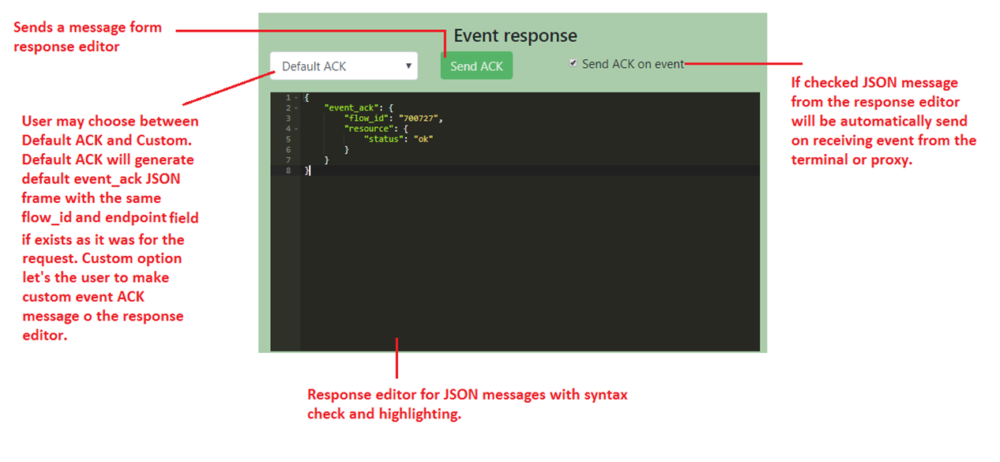
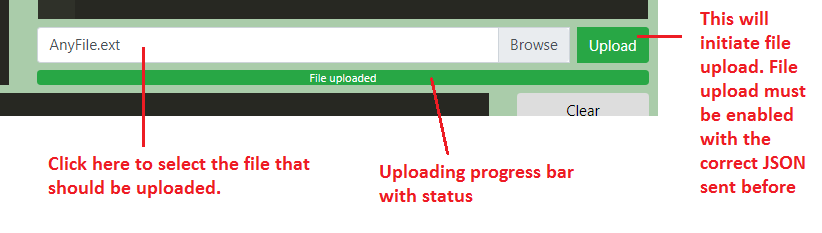

Contents
Validation Tool is a WebSocket client intended to verify the iConnect-WS TSI and iConnect-WS UPP functionality using the JSON messages.
Connection components are used to specify the WebSocket host, endpoint and to connect to a specified
endpoint.
Request components are used to prepare the JSON message (request) to be send to connected WebSocket endpoint.
Event response components are used to prepare the JSON message (event ACK) to be send to connected WebSocket endpoint automatically or manually.

Validation tool provides a possibility to upload the file from the PC to a terminal. This feature is tested with Google Chrome Version 67.0.3396.99 with enabled --allow-file-access-from-files option. This option should be set after chrome.exe in the shortcut i.e. "C:\Program Files (x86)\Google\Chrome\Application\chrome.exe" --allow-file-access-from-files. File upload will not work on Chrome w/o --allow-file-access-from-files option.

Frame viewer is used to show the JSON frame flow from/to the connected endpoint as well as to show the Validation Tool errors.
The binary data received from the terminal/proxy will be saved in the file in the browsers default download folder. File name can be specified in Binary Data Settings window which will appear automatically.